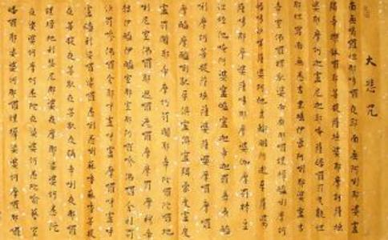

本
1、若善男子善女人，诵持此神咒者，发广大菩提心，誓度一切众生。身持斋戒，于诸众生起平等心，常诵此咒，莫令断绝。
2、住于净室，澡浴清净，著净衣服。
3、悬旛、燃灯，备香华、百味饮食以用供养。
4、制心一处，更莫异缘，
1、临命终时十方诸佛皆来授手。
2、欲生何等佛土，随愿皆得往生。
3、不堕三恶道。
4、能生诸佛国。
5、得无量三昧辩才。
6、诵持大悲神咒者，于现在生中一切所求若不果遂者，不得为大悲心陀罗尼也，唯除不善、除不至诚。
7、若诸女人厌贱女身欲成男子身，诵持大悲陀罗尼章句，若不转女身成男子身者，我誓不成正觉，生少疑心者，必不果遂也。
8、若诸众生侵损
（1）若侵损、食用常住饮食、财物，要对十方师忏谢，然始除灭。
（2）今诵大悲陀罗尼时，十方师即来为作证明，一切罪障悉皆消灭，一切十恶、五逆、谤人、谤法、破斋、
（3）唯除一事，于咒生疑者，乃至小罪轻业亦不得灭，何况重罪；虽不即灭重罪，犹能远作菩提之因。
9、若诸人天诵持大悲心咒者，不受十五种恶死也。其恶死者：
（1）不令其饥饿困苦死。
（2）不为枷禁杖楚死。
（3）不为怨家仇对死。
（4）不为军阵相杀死。
（5）不为豺狼恶兽残害死。
（6）不为毒蛇蚖蝎所中死。
（7）不为水火焚漂死。
（8）不为毒药所中死。
（9）不为蛊毒害死。
（10）不为狂乱失念死。
（11）不为山树崖岸坠落死。
（12）不为恶人厌魅死。
（13）不为邪神恶鬼得便死。
（14）不为恶病缠身死。
（15）不为非分自害死。
10、诵持大悲神咒者，得十五种善生者：
（1）所生之处常逢善王。
（2）常生善国。
（3）常值好时。
（4）常逢善友。
（5）身根常得具足。
（6）道心纯熟。
（7）不犯禁戒。
（8）所有眷属恩义和顺。
（9）资具财食常得丰足。
（10）恒得他人恭敬扶接。
（11）所有财宝无他劫夺。
（12）意欲所求皆悉称遂。
（13）龙天善神恒常拥卫。
（14）所生之处见佛闻法。
（15）所闻
※若有诵持大悲心陀罗尼者，得如是等十五种善生也，一切
1、为诸众生得安乐故。
2、除一切病故。
3、得
4、得富饶故。
5、灭除一切恶业重罪故。
6、离障难故。
7、增长一切白法诸功德故。
8、成就一切诸善根故。
9、远杂一切诸怖畏故。
10、速能满足一切诸希求故。
南无·喝啰怛那·哆啰夜耶。（námó·hélàdánā·duōlàyèyē。）
南无·阿唎耶。（námó·ālìyē。）
婆卢羯帝·烁钵啰耶。（pólújiédì·shuòbōlàyē。）
菩提萨埵婆耶。（pútísàduǒpóyē。）
摩诃萨埵婆耶。（móhēsàduǒpóyē。）
摩诃迦卢尼迦耶。（móhējiālúníjiāyē。）
唵。（ong。）
萨皤啰罚曳。（sàpólàfáyì。）
数怛那怛写。（shùdánādáxià。）
南无悉吉利埵·伊蒙阿唎耶。（námóxījílìduǒ·yīméngālìyē。）
婆卢吉帝·室佛啰楞驮婆。（pólújídì·shìfólàléngtuópó。）
南无·那啰谨墀。（námó·nālàjǐnchí。）
醯唎摩诃皤哆沙咩。（xīlìmóhēpóduōshāmiē。）
萨婆阿他·豆输朋。（sàpóātuō·dòushūpéng。）
阿逝孕。（āshìyùn。）
萨婆萨哆·那摩婆萨哆·那摩婆伽。（sàpósàduō·námópósàduō·námópóqié。）
摩罚特豆。（mófátèdòu。）
怛侄他。（dázhítuō。）
唵·阿婆卢醯。（ōng。·āpólúxī。）
卢迦帝。（lújiādì。）
迦罗帝。（jiāluódì。）
夷醯唎。（yíxīlì。）
摩诃菩提萨埵。（móhēpútísàduǒ。）
萨婆萨婆。（sàpósàpó。）
摩啰摩啰。（mólàmólà。）
摩醯摩醯·唎驮孕。（móxīmóxī·lìtuóyùn。）
俱卢俱卢·羯蒙。（jùlújùlú·jiéméng。）
度卢度卢·罚阇耶帝。（dùlúdùlú·fáshéyēdì。）
摩诃罚阇耶帝。（móhēfáshéyēdì。）
陀啰陀啰。（tuólàtuólà。）
地唎尼。（dìlìní。）
室佛啰耶。（shìfólàyē。）
遮啰遮啰。（zhēlàzhēlà。）
么么·罚摩啰。（mómó·fámólà。）
穆帝隶。（mùdìlì。）
伊醯伊醯。（yīxīyīxī。）
室那室那。（shìnāshìnā。）
阿啰嘇·佛啰
罚娑罚嘇。（fásuōfáshēn。）
佛啰舍耶。（fólàshěyē。）
呼卢呼卢摩啰。（hūlúhūlúmólà。）
呼卢呼卢醯利。（hūlúhūlúxīlì。）
娑啰娑啰。（suōlàsuōlà。）
悉唎悉唎。（xīlìxīlì。）
苏嚧苏嚧。（sūlúsūlú。）
菩提夜·菩提夜。（pútíyè·pútíyè。）
菩驮夜·菩驮夜。（pútuóyè·pútuóyè。）
弥帝利夜。（mídìlìyè。）
那啰谨墀。（nālàjǐnchí。）
地利瑟尼那。（dìlìsènínā。）
婆夜摩那。（póyèmónā。）
娑婆诃。（sāpóhē。）
悉陀夜。（xītuóyè。）
娑婆诃。（sāpóhē。）
摩诃悉陀夜。（móhēxītuóyè。）
娑婆诃。（sāpóhē。）
悉陀喻艺。（xītuóyùyì。）
室皤啰耶。（shìpólàyē。）
娑婆诃。（sāpóhē。）
那啰谨墀。（nālàjǐnchí。）
娑婆诃。（sāpóhē。）
摩啰那啰。（mólànālà。）
娑婆诃。（sāpóhē。）
悉啰僧·阿穆佉耶。（xīlàsēng·āmùqiéyē。）
娑婆诃。（sāpóhē。）
娑婆摩诃·阿悉陀夜。（sāpómóhē·āxītuóyè。）
娑婆诃。（sāpóhē。）
者吉啰·阿悉陀夜。（zhějílà·āxītuóyè。）
娑婆诃。（sāpóhē。）
波陀摩·羯悉陀夜。（bōtuómó·jiéxītuóyè。）
娑婆诃。（sāpóhē。）
那啰谨墀·皤伽啰耶。（nālàjǐnchí·póqiélàyē。）
娑婆诃。（sāpóhē。）
摩婆利·胜羯啰夜。（mópólì·shèngjiélàyè。）
娑婆诃。（sāpóhē。）
南无喝啰怛那·哆啰夜耶。（námóhélàdánā·duōlàyèyē。）
南无阿利耶。（námóālìyē。）
婆嚧吉帝。（pólújídì。）
烁皤啰夜。（shuòpólàyè。）
娑婆诃。（sāpóhē。）
唵·悉殿都。（ōng·xīdiàndū。）
漫多啰。（mànduōlà）
跋陀耶。（bátuóyě。）
娑婆诃。（sāpóhē。）